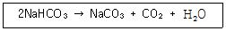
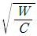
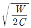
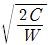
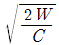
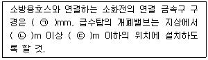
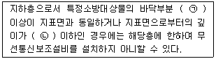
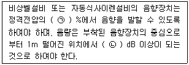

소방설비산업기사(전기) (2016-05-08 기출문제)
1과목: 소방원론
1. 화재 발생 위험에 대한 설명을 틀린 것은?
- 인화점은 낮을수록 위험하다.
- 발화점은 높을수록 위험하다.
- 산소 농도는 높을수록 위험하다.
- 연소 하한계는 낮을수록 위험하다.
(정답률: 82%)

2. 화재의 종류에서 A급 화재에 해당하는 색상은?
- 황색
- 청색
- 백색
- 적색
(정답률: 87%)
3. 열에너지원의 종류 중 화학열에 해당하는 것은?
- 압축열
- 분해열
- 유전열
- 스파크열
(정답률: 82%)
4. 어떤 유기화합물을 분석한 결과, 실험식이 CH2O 이였으며 분자량을 측정하였더니 60이었다. 이 물질의 시성식은? (단, C,H,O의 원자량은 각각 12, 1, 16)
- CH3OH
- CH3COOCH3
- CH3COCH3
- CH3COOH
(정답률: 66%)
5. 위험물의 위험성을 나타내는 성질에 대한 설명으로 틀린 것은?
- 비등점이 낮아지면 인화의 위험성이 높다.
- 비중의 값이 클수록 위험성이 높다.
- 융점이 낮아질수록 위험성이 높다.
- 점성이 낮아질수록 위험성이 높다.
(정답률: 57%)
6. 화재강도에 영향을 미치는 인자가 아닌 것은?
- 가연물의 비표면적
- 화재실의 구조
- 가연물의 배열상태
- 점화원 또는 발화원의 온도
(정답률: 51%)
7. 물분무소화설비의 주된 소화효과가 아닌 것은?
- 냉각효과
- 연쇄반응 단절효과
- 질식효과
- 희석효과
(정답률: 78%)
8. 응축상태의 연소를 무엇이라 하는가?
- 작열연소
- 불꽃연소
- 폭발연소
- 분해연소
(정답률: 66%)
9. 분말소화약제의 열분해에 의한 반응식 중 맞는 것은?
- 2NaHCO3+열→NaCO3+2CO2+H2O
- 2KHCO3+열→KCO3+2CO2+H2O
- NH4H2PO4+열→HPO3+NH3+H2O
- 2KHCO3+(NH2)2CO+열→K2CO3+NH2+CO2
(정답률: 70%)
10. 청정소화약제 중 HFC계열인 펜타플루오로에탄(HFC-125, CHF2CF3)의 최대 허용 설계 농도는?
- 0.2%
- 1.0%
- 11.5%
- 9.0%
(정답률: 54%)
11. 실험군 쥐를 15분동안 노출시켰을 때 실험군의 절반이 사망하는 치사 농도는?
- ODP
- GWP
- NOAEL
- ALC
(정답률: 74%)
12. 물의 물리적 성질에 대한 설명으로 틀린 것은?
- 물의 비열은 1cal/g℃ 이다.
- 물의 용융열은 79.7cal/g 이다.
- 물의 증발잠열은 430 kcal/g 이다.
- 대기압하에서 100℃ 물이 액체에서 수증기로 바뀌면 체적은 약 1600배 증가한다.
(정답률: 87%)
13. 연소상태에 대한 설명 중 적합하지 못한 것은?
- 불완전연소는 산소의 공급량 부족으로 나타나는 현상이다.
- 가연성 액체의 연소는 액체 자체가 연소하고 있는 것이다.
- 분해연소는 가연물질이 가열분해되고, 그 때 생기는 가연성 기체가 연소하는 현상을 말한다.
- 표면연소는 가연물 그 자체가 직접 불에 타는 현상을 의미한다.
(정답률: 66%)
14. 오존층 파괴 효과가 없는(ODP=0) 소화약제는?
- Halon 1301
- HFC-227ea
- HCFC BLEND A
- Halon 1211
(정답률: 60%)
15. 유류화재에 대한 설명으로 틀린 것은?
- 액체상태에서 불이 붙을 수 있다.
- 유류는 반드시 휘발하여 기체상태에서만 불이 붙을 수 있다.
- 경질류 화재는 쉽게 발생할 수 있으나 열축적이 없어 쉽게 진화할 수 있다.
- 증질류 화재는 경질류 화재의 진압보다 어렵다.
(정답률: 57%)
16. 온도 및 습도가 높은 장소에서 취급할 때 자연발화의 위험성이 가장 큰 것은?
- 질산나트륨
- 황화린
- 아닐린
- 샐룰로이드
(정답률: 81%)
17. 다음 열분해 반응식과 관계가 있는 분말 소화약제는?(오류 신고가 접수된 문제입니다. 반드시 정답과 해설을 확인하시기 바랍니다.)

- 1종 분말
- 2종 분말
- 3종 분말
- 4종 분말
(정답률: 80%)
18. 다음 중 가연성가스가 아닌 것은?
- 수소
- 염소
- 암모니아
- 메탄
(정답률: 66%)
19. 건축물의 주요구조부에서 제외되는 것은?
- 차양
- 바닥
- 내력벽
- 지붕틀
(정답률: 84%)
20. 건물내부에서 화재가 발생하여 실내온도가 27℃에서 1227℃로 상승한다면 이 온도 상승으로 인하여 실내공기는 처음의 몇 배로 팽창하는가? (단, 화재에 의한 압력변화 등 기타 주어지지 않은 조건은 무시한다.)
- 3배
- 5배
- 7배
- 9배
(정답률: 65%)
2과목: 소방전기회로
21. 실리콘제어정류기(SCR)에 대한 설명 중 틀린 것은?
- Pnpn의 4층 구조이다.
- 스위칭 소자이다.
- 직류 및 교류의 전력 제어용으로 사용된다.
- 양방향성 사이리스터이다.
(정답률: 77%)
22. 회로시험기(Multi Tester)로 측정할 수 없는 것은?
- 직류전압
- 고주파전압
- 교류전압
- 저항
(정답률: 75%)
23. 서보전동기에 필요한 특징을 설명한 것으로 옳지 않은 것은?
- 정·역회전이 가능하여야 한다.
- 직류용은 없고 교류용만 있다.
- 저속이며 원활한 운전이 가능하여야 한다.
- 급가속, 급감속이 쉬워야 한다.
(정답률: 86%)
24. 0.1㎌인 콘덴서에 v=2sin(2π100t)의 전압을 인가했을 때 t=0에서의 전류는 몇 A 인가?
- 0
- 0.1
- 0.125
- 1.25
(정답률: 54%)
25. 금속에 전류가 흐르는 까닭은 무엇의 이동에 따른 것인가?
- 자유전자
- 중성자
- 전자핵
- 양자
(정답률: 86%)
26. 동선의 길이를 2배로 고르게 늘리니 전선의 단면적이 1/2로 되었다. 이 때 저항은 처음의 몇 배가 되는가? (단, 체적은 일정하다.)
- 2배
- 4배
- 8배
- 16배
(정답률: 87%)
27. 전류의 열작용과 관계가 있는 법칙은?
- 키르히호프의 법칙
- 줄의 법칙
- 플레밍의 법칙
- 옴의 법칙
(정답률: 79%)
28. 두 개의 저항 R1, R2를 직렬로 연결하면 10Ω, 병렬로 연결하면 2.4Ω이 된다. 두 저항값은 각각 몇 Ω인가?
- 5, 5
- 4, 6
- 3, 7
- 2, 8
(정답률: 83%)
29. 프로세스 제어에 대한 설명으로 가장 옳은 것은?
- 공업공정의 상태량을 제어량으로 하는 제어를 말한다.
- 목표값의 변화가 미리 정하여져 있어 그 정하여진 대로 변화하는 제어를 말한다.
- 회전수, 방위, 전압과 같은 제어량이 일정시간안에 목표값이 도달되는 제어이다.
- 임의로 변화하는 목표값을 추정하는 제어의 일종이다.
(정답률: 71%)
30. 변압기의 용량이 4 KVA, 무유도 전부하에서의 동손은 120W, 철손은 80W 인 경우 부하가 1/2로 되었을 때의 효율은 몇 % 인가?
- 80%
- 85%
- 90%
- 95%
(정답률: 41%)
31. 계전기 접점의 불꽃을 소거할 목적으로 사용되는 반도체 소자는?
- 바리스터
- 서미스터
- 바렉터 다이오드
- 터널 다이오드
(정답률: 68%)
32. i=Imsin(ωt-15°)A인 정현파에서 ωt가 어느 값일 때 순시값이 실효값과 같게 되는가?
- 30°
- 45°
- 60°
- 90°
(정답률: 51%)
33. 임피던스 16+j12Ω에 26+j40V의 전압을 인가할 때 유효전력을 몇 W 인가?
- 58.26
- 91.04
- 113.8
- 227.6
(정답률: 54%)
34. 맥동률이 가장 적은 정류방식은?
- 단상 반파식
- 단상 전파식
- 3상 반파식
- 3상 전파식
(정답률: 70%)
35. 변압기, 차단기, 유입개폐기 등 고압기기의 철대나 금속제 케이스에 시행하는 접지공사의 종류는?(관련 규정 개정전 문제로 여기서는 기존 정답인 1번을 누르면 정답 처리됩니다. 자세한 내용은 해설을 참고하세요.)
- 제1종 접지공사
- 제2종 접지공사
- 제3종 접지공사
- 특별 제3종 접지공사
(정답률: 60%)
36. 피드백 제어계의 특징으로 틀린 것은?
- 정화성의 증가
- 감대폭(대역폭)의 감소
- 구조가 복잡하고 많은 설치비용이 필요
- 계의 특성 변화에 대한 입력 대 출력비의 감도 감소
(정답률: 50%)
37. 유도결합 되어 있는 한 쌍의 코일이 있다. 1차측 코일의 전류가 매초 5A의 비율로 변화하여 2차측 코일 양단에 15V의 유도기전력이 발생하고 있다면 두 코일 사이의 상호인덕턴스는 몇 H인가?
- 0.33
- 3
- 20
- 75
(정답률: 61%)
38. 정전용량 C의 콘덴서의 W의 에너지를 축적하려면 인가전압은 몇 V인가?




(정답률: 59%)
39. 변압기의 정격 1차 전압이란?
- 전부하를 걸었을 때의 1차 전압
- 정격 2차 전압에 권수비를 곱한 것
- 무부하시의 1차 전압
- 정격 2차 전압을 권수비로 나눈 것
(정답률: 67%)
40. 시퀀스제어에 대한 설명으로 틀린 것은?
- 논리회로가 조합되어 사용된다.
- 기계적 접점도 사용된다.
- 전체 시스템에 연결된 접점들이 일시에 동작할 수 있다.
- 시간지연요소가 사용된다.
(정답률: 70%)
3과목: 소방관계법규
41. 소방용수시설인 저수조의 설치기준으로 옳은 것은?
- 흡수부분의 수심이 0.5m 이하일 것
- 지면으로부터의 낙차가 4.5m 이하일 것
- 흡수관의 투입구가 사각형의 경우에는 한 변의 길이가 60cm 이하일 것
- 저수조에 물을 공급하는 방법은 상수도에 연결하여 수동으로 급수되는 구조일 것
(정답률: 68%)
42. 다음 중 소방대상물이 아닌 것은?
- 산림
- 항해중인 선박
- 인공 구조물
- 선박 건조 구조물
(정답률: 89%)
43. 소방시설업의 등록을 하지 않고 영업을 한 자에 대한 벌칙은?(관련 규정 개정전 문제로 기존 정답은 4번입니다. 여기서는 4번을 누르면 정답 처리 됩니다. 자세한 내용은 해설을 참고하세요.)
- 1년 이하의 징역 또는 1000만원 이하의 벌금
- 2년 이하의 징역 또는 1500만원 이하의 벌금
- 3년 이하의 징역 또는 1000만원 이하의 벌금
- 4년 이하의 징역 또는 1500만원 이하의 벌금
(정답률: 72%)
44. 소방용수시설별 설치기준 중 다음 ( ) 안에 모두 알맞은 것은?

- ㉠65, ㉡0.8, ㉢1.5
- ㉠50, ㉡0.8, ㉢1.5
- ㉠65, ㉡1.5, ㉢1.7
- ㉠50, ㉡1.5, ㉢1.7
(정답률: 58%)
45. 소방시설 등에 대한 자체 점검 중 작동기능 점검의 실시 횟수로 옳은 것은?
- 분기에 1회 이상
- 6개월에 2회 이상
- 연 1회 이상
- 연 2회 이상
(정답률: 72%)
46. 건축허가 등의 동의대상물의 범위 중 노유자시설의 연면적 기준은?
- 100m2 이상
- 200m2 이상
- 400m2 미만
- 400m2 이상
(정답률: 67%)
47. 특정소방대상물에 설치된 전산실의 경우 물분무 등 소화설비를 설치해야 하는 바닥면적기준은 몇 m2 이상 인가? (단, 하나의 방화구획내에 둘 이상의 실이 설치된 경우 이를 하나의 실로 본다.)
- 100m2
- 300m2
- 500m2
- 1000m2
(정답률: 51%)
48. 소방시설공사의 하자보수 보증기간이 3년이 아닌 것은?
- 자동소화장치
- 무선통신보조설비
- 자동화재탐지설비
- 간이스프링클러설비
(정답률: 77%)
49. 기술인력 중 보조기술인력에 속하지 않는 자는?
- 소방설비기사
- 소방설비산업기사
- 소방공무원 2년 경력자
- 소방관력학과 졸업자
(정답률: 70%)
50. 출동한 소방대의 소방장비를 파손하거나 그 효율을 해하여 화재진압·인명구조 또는 구급활동을 방해하는 행위를 한 자의 벌칙은?(관련 규정 개정전 문제로 여기서는 기존 정답인 2번을 누르면 정답 처리됩니다. 자세한 내용은 해설을 참고하세요.)
- 10년 이하의 징역 또는 5000만원 이하의 벌금
- 5년 이하의 징역 또는 3000만원 이하의 벌금
- 3년 이하의 징역 또는 1500만원 이하의 벌금
- 2년 이하의 징역 또는 1000만원 이하의 벌금
(정답률: 80%)
51. 다음 중 특정소방대상물의 관계인의 업무가 아닌 것은? (단, 소방안전관리대상물은 제외한다.)
- 자위소방대의 구성, 운영 교육
- 소방시설의 유지 관리
- 화기취급의 감독
- 방화구획의 유지 관리
(정답률: 72%)
52. 지정수량 미만인 위험물의 지장 또는 취급에 관한 기술상의 기준은 무엇으로 정하는가?
- 대통령령
- 국민안전처장관령
- 총리령
- 시·도의 조례
(정답률: 71%)
53. 공장·창고가 밀집한 지역에서 화재로 오인할 만한 우려기 있는 불을 피우는 자가 관할소방본부장에게 신고를 하지 않아 소방자동차를 출동하게 한 자에 대한 벌칙은?
- 200만원 이하의 과태료
- 100만원 이하의 과태료
- 50만원 이하의 과태료
- 20만원 이하의 과태료
(정답률: 62%)
54. 일반음식점에서 조리를 위하여 불을 사용하는 설비를 설치할 경우 화재예방을 위하여 지켜야 할 사항 중 틀린 것은?
- 주방설비에 부속된 배기덕트는 0.5mm이상의 아연도금강판 또는 이와 동등 이상의 내식성 불연재료로 설치할 것
- 주방시설에는 기름을 제거할 수 있는 필터 등을 설치할 것
- 열을 발생하는 조리기구는 반자 또는 선반으로부터 0.5m 이상 떨어지게 할 것
- 열을 발생하는 조리기구로부터 0.15m 이내의 거리에 있는 가연성 주요구조부는 식면관 또는 단일성이 있는 불연재료 덮어씌울 것
(정답률: 60%)
55. 연면적이 33m2이상이 되지 않아도 소화기구를 설치하여야 하는 특정소방대상물은?
- 변전실
- 가스시설
- 판매시설
- 유흥주점영업소
(정답률: 63%)
56. 대지경계선 안에 2이상의 건축물이 있는 경우 연소 우려가 있는 구조로 볼 수 있는 것은?
- 1층 외벽으로부터 수평거리 6m 이상이고 개구부가 설치되지 않은 구조
- 2층 외벽으로부터 수평거리 10m 이상이고 개구부가 설치되지 않은 구조
- 2층 외벽으로부터 수평거리 6m이고 개구부가 다른 건축물을 향하여 설치된 구조
- 1층 외벽으로부터 수평거리 10m이고 개구부가 다른 건축물을 향하여 설치된 구조
(정답률: 57%)
57. 탱크안전성능검사의 대상이 되는 탱크 중 기초·지반검사를 받아야 하는 옥외탱크저장소의 액체위험물탱크의 용량은 몇 L 이상인가?
- 100만
- 10만
- 1만
- 1천
(정답률: 62%)
58. 위험물제조소 등에서 자동화재탐지설비를 설치하여야 할 제조소 및 일반취급소는 옥내에서 지정수량 몇 배 이상의 위험물을 저장 취급하는 곳인가?
- 지정수량 5배 이상
- 지정수량 10배 이상
- 지정수량 50배 이상
- 지정수량 100배 이상
(정답률: 44%)
59. 공동 소방안전관리자를 선임하여야 하는 특정소방대상물 중 고층 건축물은 지하층을 제외한 층수가 몇 층 이상인 건축물만 해당되는가?
- 6층
- 11층
- 20층
- 30층
(정답률: 83%)
60. 위험물의 지정수량에서 산화성 고체인 중크롬산염류의 지정수량은?
- 3000kg
- 1000kg
- 300kg
- 50kg
(정답률: 62%)
4과목: 소방전기시설의 구조 및 원리
61. 무선통신보조설비의 누설동출케이블 및 공중선은 고압의 전로로부터 몇 m 이상 떨어진 위치에 설치하여야 하는가? (단, 해당 전로에 정전기 차폐장치를 유효하게 설치한 경우가 아니다.)
- 0.5
- 1.0
- 1.5
- 2.0
(정답률: 64%)
62. 다음 ( )안에 알맞은 것으로 연결된 것은?

- ㉠ 1면, ㉡ 1 m
- ㉠ 2면, ㉡ 1 m
- ㉠ 1면, ㉡ 2 m
- ㉠ 2면, ㉡ 2 m
(정답률: 82%)
63. 열반도체식 감지기의 구성요소가 아닌 것은?
- 열반도체 소자
- 수열판
- 미터릴레이
- 리크공
(정답률: 68%)
64. 비상콘센트설비의 절연내력은 전원부와 외함사이의 정격전압이 150V 이하인 경우 인가하는 실효전압은?
- 150V
- 300V
- 500V
- 1000V
(정답률: 48%)
65. 자동식 사이렌설비에서 전원회로를 제외한 부속회로의 배선 상호간의 절연저항은? (단, 직류 250V의 절연저항 측정기를 사용하여 1경계구역을 측정한다.)
- 0.1MΩ 이상
- 0.1MΩ 미만
- 1MΩ 이상
- 1MΩ 미만
(정답률: 70%)
66. 공연장에 설치하여야 할 유도등의 종류가 아닌 것은?
- 대형피난구 유도등
- 통로 유도등
- 중형피난구 유도등
- 객석 유도등
(정답률: 72%)
67. 누전경보기의 변류기는 경계전로에 정격전류를 흘리는 경우, 그 경계전로의 전압강하는 몇 V 이하이어야 하는가? (단, 경계전로의 전선을 그 변류기에 관통시키는 것이 아닌 경우이다.)
- 0.1
- 0.5
- 1
- 5
(정답률: 53%)
68. 다음 중 정온식 스포트형 감지기의 구조 및 작동원리에 대한 설명이 아닌 것은?
- 바이메탈의 활곡 및 반전 이용
- 금속의 온도차 이용
- 액체의 팽창 이용
- 가용절연물 이용
(정답률: 55%)
69. 비상방송설비의 음향장치를 실외에 설치하는 경우 확성기의 음성입력은 최소 몇 W 이상이어야 하는가?
- 1
- 3
- 10
- 30
(정답률: 85%)
70. 비상콘센트설비 비상전원을 실내에 설치할 경우 그 실내에 설치해야 하는 것은?
- 유도등
- 휴대용 비상조명등
- 실내조명등
- 비상조명등
(정답률: 73%)
71. 공기관식 차동식 분포형 감지기의 검출기 접점수고시험은 무엇을 시험하는 것인가?
- 접점간격
- 다이아프램 용량
- 리크밸브의 이상 유무
- 다이아프램의 이상 유무
(정답률: 59%)
72. 다음 ( )안에 알맞은 것으로 연결된 것은?

- ㉠ 20, ㉡ 90
- ㉠ 20, ㉡ 125
- ㉠ 80, ㉡ 90
- ㉠ 80, ㉡ 125
(정답률: 84%)
73. 10층짜리 건물의 3층 전체를 위탁시설 및 운동시설로 사용하고자 한다. 3층에 설치해야 하는 피난기구의 최소 설치 개수는? (단, 바닥면적은 3000m2이다.)
- 1개
- 2개
- 3개
- 4개
(정답률: 40%)
74. 다음 중 경계전로의 누설전류를 자동적으로 검출하여 이를 누전경보기의 수신부에 송신하는 것은?
- 발신기
- 변류기
- 중계기
- 검출기
(정답률: 61%)
75. 주방·보일러실 등으로서 다량의 화기를 취급하는 장소에 설치하는 정온식감지기의 공칭작동온도는 최고 주위온도보다 몇 ℃ 이상 높은 것으로 설치해야 하는가?
- 3
- 5
- 20
- 100
(정답률: 85%)
76. 지하층에 있는 의료시설·노유자시설에 적응성이 있는 피난기구는? (단, 의료시설은 장례식장을 제외한다.)
- 완강기
- 피난용트랩
- 공기안전매트
- 피난사다리
(정답률: 78%)
77. 열반도체식 차동식분포형감지기의 설치기준 중 하나의 검출기에 접속하는 감지부의 개수는?
- 2개 이상 15개 이하
- 2개 이상 20개 이하
- 4개 이상 15개 이하
- 4개 이상 20개 이하
(정답률: 45%)
78. 가스누설경보기와 가스의 누설을 표시하는 표시등은 점등시 어떤 색으로 표시되어야 하는가?
- 황색
- 적색
- 녹색
- 청색
(정답률: 69%)
79. 휴대용비상조명등의 설치기준으로 옳은 것은?(오류 신고가 접수된 문제입니다. 반드시 정답과 해설을 확인하시기 바랍니다.)
- 외함은 불연성능의 구조일 것
- 사용시 점등표시는 “ ON, OFF”의 구조일 것
- 건전지 용량은 20분 이상 유효하게 사용할 수 있을 것
- 지하상가에는 수평거리 25m 이하마다 3개 이상 설치할 것
(정답률: 44%)
80. 주요구조부가 내화구조로 된 바닥면적 70m2인 특정소방대상물에 설치하는 열전대식 차동식분포형감지기의 열전대부는 몇 개 이상이어야 하는가?
- 1
- 2
- 3
- 4
(정답률: 48%)